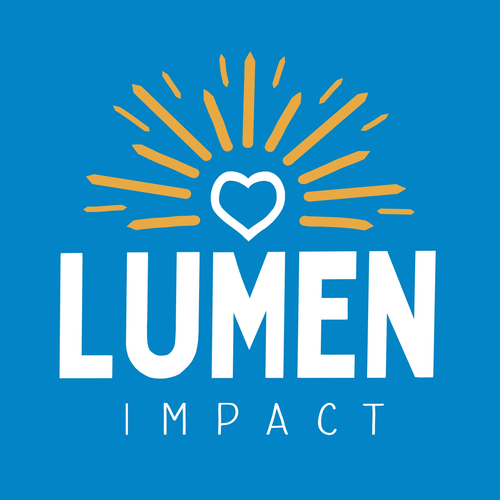
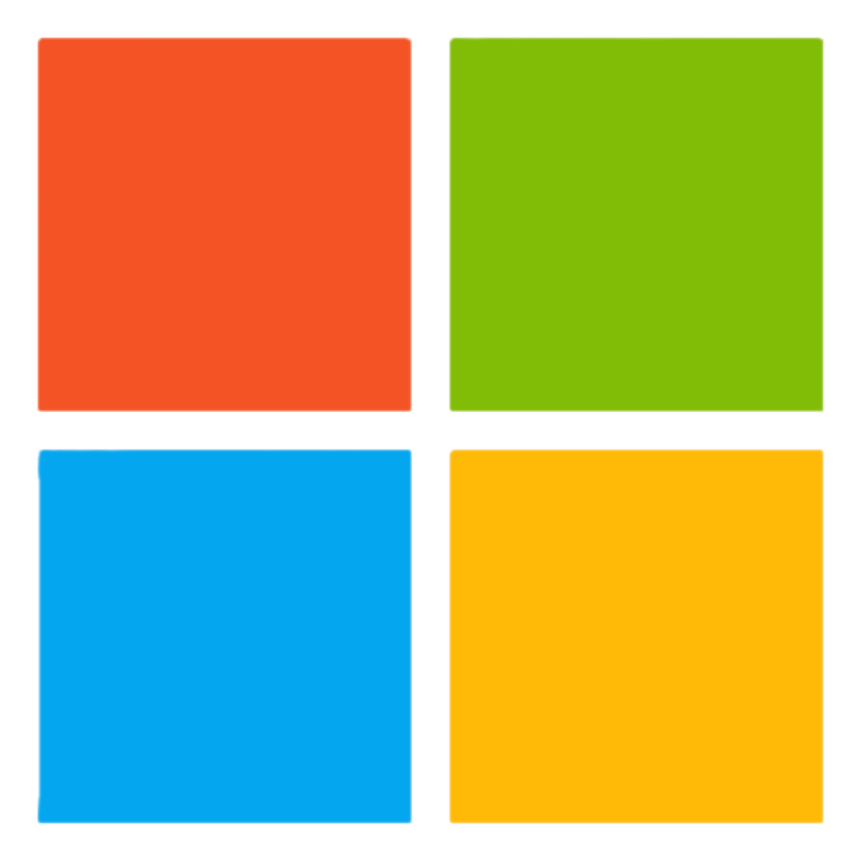
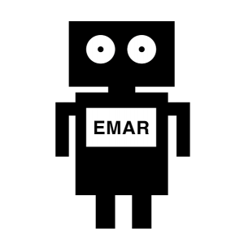

About
I always wanted to be a PM. I built the foundation first.
Software engineer turned product co-founder, deliberately building the craft of product management: discovery, prioritization, research, and end-to-end ownership.

Software engineer turned product co-founder, deliberately building the craft of product management: discovery, prioritization, research, and end-to-end ownership.

Two-sided local-giving marketplace. Own product end to end: research, founding PRD, prototypes, metrics, and website build.

Backend infrastructure for enterprise security and compliance. Authored and aligned the 12-team policy sync PRD; owned customer escalations; onboarded 5 to 8 new hires and interns.
Refactored the Security mid-tier platform for retention policy UX, improving scalability for exponential customer growth.
Led the eDiscovery KQL query builder redesign. 74% improvement in query correctness via A/B test.

Interdisciplinary research on a social robot for adolescent mental health. Built web app features and coordinated field-study sessions.
I spent three years as a software engineer at Microsoft Purview, building backend infrastructure for enterprise security and compliance: sync calculations across policy types, a notification pipeline for third-party app enforcement, and the full lifecycle of a policy type from UI to storage. The work I was proudest of was not a feature I coded. It was a PRD I wrote and aligned across all 12 Purview product teams to standardize a workflow that had drifted into 12 different shapes. That was the moment I understood the job I actually wanted.
I had always wanted to be a product manager. I just knew I was not ready yet, and I wanted to build the technical foundation deliberately rather than rush a title. So in April 2025 I made a decision: leave a comfortable engineering trajectory and co-found Lumen Impact with my brother, explicitly to build PM-track skills before pursuing a formal PM role.
Lumen Impact connects donors to the specific needs of their local community. It is a two-sided marketplace, and I own product end to end: discovery, user research, the founding PRD, prototypes, metrics, and the website itself, built through an AI-assisted workflow.
I did the research before the building. A 24-person donor-motivation study produced our three success metrics, ease of use, convenience, and cost, which became the OKRs behind every decision. A 30-person mixed-method usability study then decomposed those metrics into measurable sub-components so we could prove which UX elements moved which metric. A first-principles competitive analysis found our wedge: small, local, relational giving with visible impact, a space GoFundMe, NextDoor, and government programs were each optimized away from.
I also made the journey public. A 10-part LinkedIn founder series documented the discovery, the research, the tooling decisions, and the lessons, with 4,852 impressions on the opening post. It turned founder work, which is invisible from outside, into a public record of how I think about product.
I am planning a deliberate hand-off of Lumen Impact to my co-founder between August and November 2026, after we release to our first set of cities, so I can move into a formal PM role inside a structured product org. This is the complement to what I have been doing: I have run a product 0 to 1 on my own; now I want to learn how scaled product gets built, alongside senior PMs.
I am clear-eyed about where I am in the journey. I have not held a formal PM title since a six-week internship in 2020, and my Microsoft years were backend infrastructure rather than consumer-facing product. That is exactly why I am targeting mid-sized organizations with strong PM mentorship: I want to absorb the rituals, RICE, roadmap reviews, OKR cycles, from people who run them daily. The 12-team PRD and the Lumen Impact body of work show I can do PM-grade work. The next role is where I sharpen it inside structure.
I co-founded a company with my brother and structured the partnership so the relationship got stronger over six-plus months, not weaker: explicit roles, a weekly cadence, a written disagreement protocol. I default to figuring things out alone, a habit I have worked on with a 30-minute rule and a real mentorship network. I studied Computer Science and Linguistics at the University of Washington, I am bilingual in English and Cantonese, and I am based in the Seattle area.